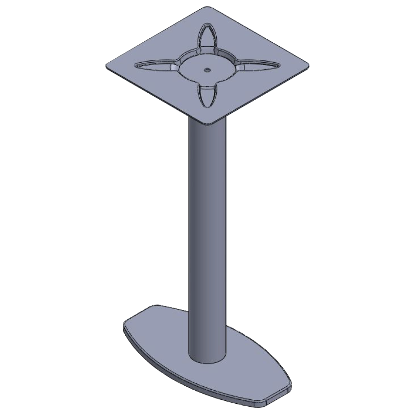
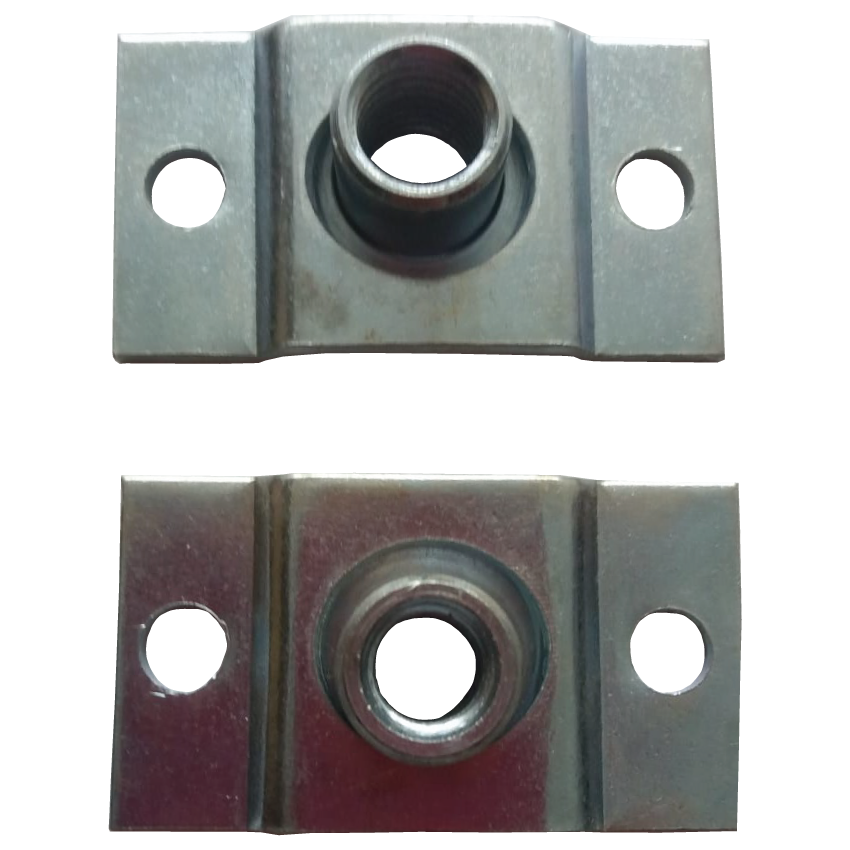
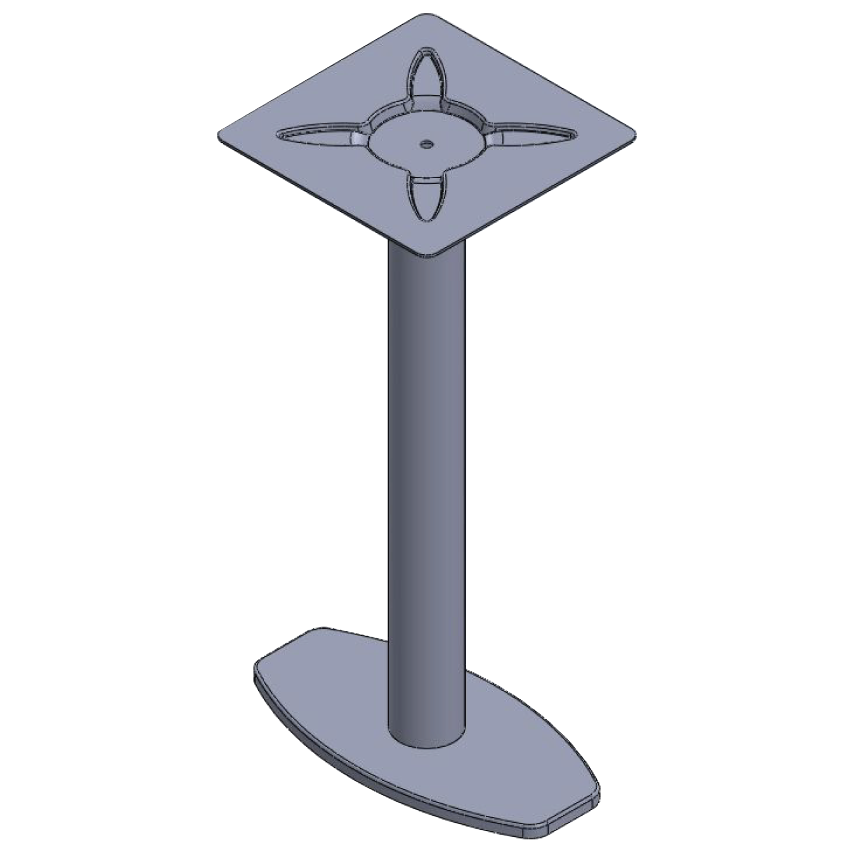
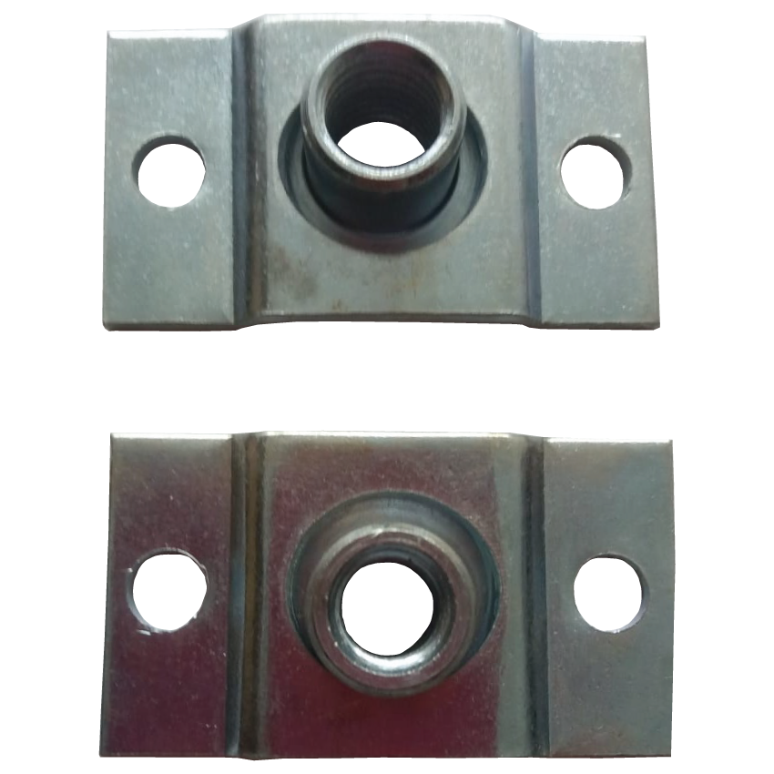

×
This is caption
×
This is caption
 



Türkiye ve dünya çapında göze çarpan tasarımlara sahip, yüksek kalite odaklı firmamız, masa ayakları ve yeni tasarımlarla, sizi memnun etmek için hizmetine devam etmektedir.
140x470 İçbükey Masa Ayağı
140x470 Dışbükey Masa Ayağı
200x400 Masa Ayağı
340x340 Masa Ayağı
400x400 Masa Ayağı
Büyük Kesik Elips Masa Ayağı
Küçük Kesik Elips Masa Ayağı
Slot Masa Ayağı
Pota Masa Ayağı 88x71cm
Pota Masa Ayağı 60x71cm
Pota Masa Ayağı 70x71cm
Pota Sehpa Ayağı 40x50cm
Kuka Masa Ayağı 52x71cm
Pota Bar Ayağı 52x100cm
Döküm Filtresi
Döküm Filtreleri
Maça Sandığı Merkezleme Parçası
Maça Sandığı Pim Merkezleme Parçası